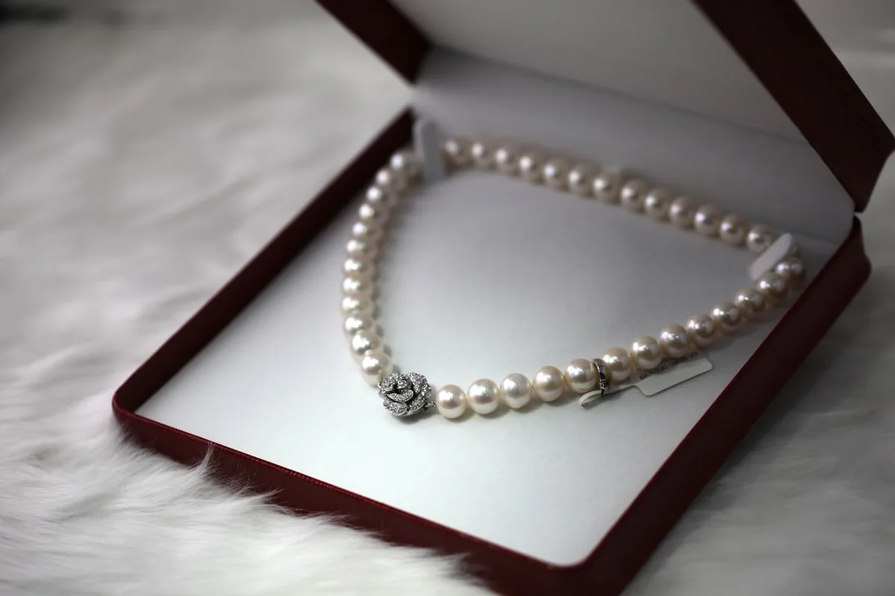
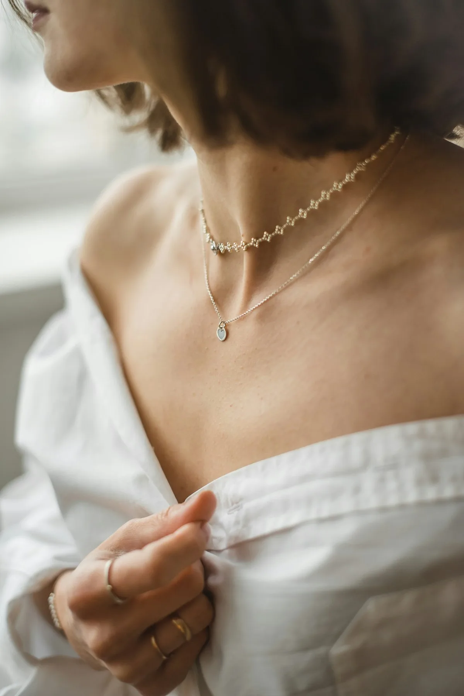

Mussel Selection
We cultivate our own mussel seed from parent lines selected over decades. Only the strongest individuals from each generation are used for nucleation — we reject over 80% at this stage based on shell thickness, mantle health, and growth rate.

Nucleation
A nucleus of freshwater mussel shell, precisely cut between 0.5–3mm, is surgically implanted into the mantle tissue by a trained technician working under 10x magnification. This moment determines the pearl's eventual size and shape.

Growth Period (3–7 years)
The nucleated mussels return to the lake in suspended trays at calibrated depths. They are checked twice yearly. During this time, the mussel coats the nucleus in successive layers of nacre — each layer 0.5–1 micron thick.
Harvest & Grading
Autumn harvests, when water temperatures are lowest. Each pearl is graded on eight criteria: luster, surface quality, shape, size, color, orient, matching potential, and nacre thickness. Only the top 12% enter the LACUSTRE collection.

Setting
Matched by hand — sometimes from multiple harvests across multiple lakes — and delivered to our goldsmiths in Geneva and Helsinki, who design each setting to allow the pearl to remain the undisputed center of attention.